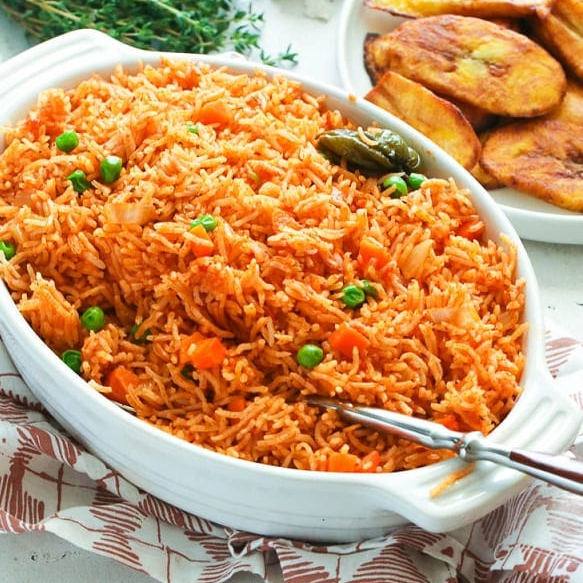

Jollof Rice

Ingredients
- 5 medium sized Roma tomatoes, roughly chopped
- 1 red bell pepper, roughly chopped
- 1 medium sized onion, roughly chopped, set aside
- 2 scotch bonnet peppers (habanero peppers as they are sometimes called)
- 1/4 cup of groundnut oil
- tbsp tomato paste
- 2 cups of parboiled rice
- 2 1/2 cups of chicken stock
- tsp salt to taste
- 1/2 tsp curry powder
- 1 tsp All purpose seasoning
- Water, as needed
Steps
- In a blender, combine tomatoes, scotch bonnet pepper and onions; purée.
- Add the bell peppers to the purée remaining in the blender and pulse until smooth.
- Add to the mixture that was set aside and stir to combine.
- Heat vegetable oil in a large pot over medium heat.
- Bring mixture to a boil.
- Stir in the rice until well mixed, then reduce the heat to low.
- Cover pot and let cook until rice is al dente, about 45 minutes.
- Check after 30 minutes; if rice is sauce-logged, remove the lid to cook off the excess sauce.
- If rice seems dry, stir in 1 to 2 cups water.
- Allow the rice at the bottom of the pot to char a bit to infuse it with a smoky flavor.
A delicious bowl of Jollof Rice with fried Ripe Plantain
Jollof rice, is a rice dish from West Africa.
The dish is typically made with long-grain rice, tomatoes, onions, spices, vegetables and meat in a single pot, although its ingredients and preparation methods vary across different regions.